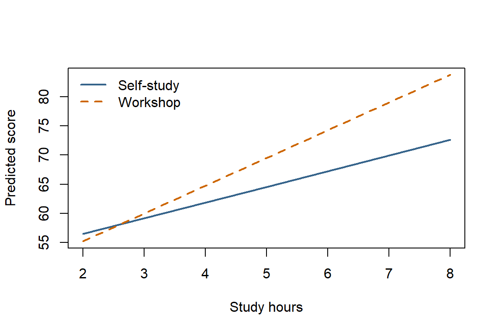

Does an additional hour of studying have the same association with test scores for every study method? An interaction lets that slope differ between groups; here we fit and interpret one using only base R.
29.1 Generate Example Data
These are synthetic scores for 120 students. We deliberately build in a steeper study-hours slope for the workshop group, then add random noise.
Each row of students represents one student. runif() draws study hours between one and nine, while rep() assigns 60 rows to each method. factor() tells R that the method is a category, not a numeric measurement. set.seed() makes the random draws reproducible when you rerun the example.
Code
set.seed(2026)students<-data.frame( hours =runif(120, min =1, max =9), method =factor(rep(c("Self-study", "Workshop"), each =60), levels =c("Self-study", "Workshop")))students$hours_centered<-students$hours-5workshop<-as.numeric(students$method=="Workshop")students$score<-65+3*students$hours_centered+4*workshop+2*students$hours_centered*workshop+rnorm(120, mean =0, sd =3)
With R’s default treatment coding, the first factor level, Self-study, is the reference group. Subtracting five makes hours_centered = 0 mean five hours of studying, not zero hours.
For example, two hours becomes -3 and eight hours becomes 3. Centering changes where we interpret the intercept and group difference; it does not change the fitted predictions when both predictors and their interaction remain in the model.
The workshop variable is 0 for self-study and 1 for workshop students. That makes the score-generation rule easier to follow:
Self-study students have an expected score of 65 at five hours, with three additional points per extra hour.
Workshop students have four additional points at five hours and an hourly slope that is two points steeper: five rather than three.
rnorm() adds normally distributed noise with mean 0 and standard deviation 3, so students do not all fall exactly on these lines. The fitted coefficients will therefore differ somewhat from the values we used to generate the data.
29.2 Fit the Interaction
In an R model formula, hours_centered * method includes both predictors and their interaction: hours_centered + method + hours_centered:method. There is no need to create a product column yourself.
The ~ separates the outcome, score, from the predictors. Using only hours_centered + method would allow different group intercepts but require the same hourly slope in both groups. Using * allows the slopes to differ too.
Code
interaction_model<-lm(score~hours_centered*method, data =students)coefficients<-coef(interaction_model)round(coefficients, 2)
lm() fits the model, coef() extracts its named coefficient estimates, and round() changes only how we display them. Read these estimates as follows:
Coefficient
Interpretation
(Intercept)
Predicted self-study score at five hours: 64.54 points.
hours_centered
Self-study slope: 2.69 additional predicted points per extra hour.
methodWorkshop
Workshop minus self-study difference at five hours: 4.95 points.
hours_centered:methodWorkshop
Workshop minus self-study slope difference: 2.08 points per hour.
The interaction coefficient is not the workshop slope. Add it to the self-study slope:
The [["..."]] expressions below retrieve individual coefficients by name. The interaction estimate is the amount we add to the reference group’s slope, not a replacement for that slope.
An extra hour is associated with about 2.69 predicted points for self-study and 4.77 for workshop students. Neither coefficient is an overall slope averaged across both groups.
29.3 Compare Predicted Scores
Use predict() to compare groups at specific hours. New data must use the same centering value as the training data.
Here, expand.grid() creates all six combinations of three study durations and two methods. These rows are scenarios, not additional observed students. predict() uses the fitted model to estimate a mean score for each scenario; it does not generate new random scores.
Compare rows with the same hours: the workshop minus self-study difference changes as hours increase. The methodWorkshop coefficient describes that difference only at five hours, not at every study duration.
For example, at eight hours the predicted scores are 72.6 for self-study and 83.8 for the workshop. Their difference is about 11.2 points: the five-hour group difference plus three hours of the additional workshop slope.
To see that changing gap, subset() separates the prediction rows by method. plot() draws the self-study line, and lines() adds the workshop line to the same axes. Both lines come from our single interaction model, not separate regressions.
Code
self_study_predictions<-subset(predictions, method=="Self-study")workshop_predictions<-subset(predictions, method=="Workshop")plot(predicted_score~hours, data =self_study_predictions, type ="l", col ="steelblue4", lwd =2, ylim =range(predictions$predicted_score), xlab ="Study hours", ylab ="Predicted score")lines(predicted_score~hours, data =workshop_predictions, col ="darkorange3", lwd =2, lty =2)legend("topleft", legend =c("Self-study", "Workshop"), col =c("steelblue4", "darkorange3"), lwd =2, lty =c(1, 2), bty ="n")

The different slopes show the fitted interaction. These are point estimates, not guaranteed individual scores or evidence that either method causes improvement. For uncertainty, confint(interaction_model) gives coefficient confidence intervals; the interaction interval concerns the difference in slopes.
# Interactions in Linear Regression {#sec-example-regression-interactions}Does an additional hour of studying have the same association with test scores for every study method? An **interaction** lets that slope differ between groups; here we fit and interpret one using only base R.## Generate Example DataThese are synthetic scores for 120 students. We deliberately build in a steeper study-hours slope for the workshop group, then add random noise.Each row of `students` represents one student. `runif()` draws study hours between one and nine, while `rep()` assigns 60 rows to each method. `factor()` tells R that the method is a category, not a numeric measurement. `set.seed()` makes the random draws reproducible when you rerun the example.```{r}#| label: ex-interaction-dataset.seed(2026)students <-data.frame(hours =runif(120, min =1, max =9),method =factor(rep(c("Self-study", "Workshop"), each =60),levels =c("Self-study", "Workshop") ))students$hours_centered <- students$hours -5workshop <-as.numeric(students$method =="Workshop")students$score <-65+3* students$hours_centered +4* workshop +2* students$hours_centered * workshop +rnorm(120, mean =0, sd =3)```With R's default treatment coding, the first factor level, `Self-study`, is the reference group. Subtracting five makes `hours_centered = 0` mean **five hours of studying**, not zero hours.For example, two hours becomes -3 and eight hours becomes 3. Centering changes where we interpret the intercept and group difference; it does not change the fitted predictions when both predictors and their interaction remain in the model.The `workshop` variable is 0 for self-study and 1 for workshop students. That makes the score-generation rule easier to follow:- Self-study students have an expected score of 65 at five hours, with three additional points per extra hour.- Workshop students have four additional points at five hours and an hourly slope that is two points steeper: five rather than three.- `rnorm()` adds normally distributed noise with mean 0 and standard deviation 3, so students do not all fall exactly on these lines. The fitted coefficients will therefore differ somewhat from the values we used to generate the data.## Fit the InteractionIn an R model formula, `hours_centered * method` includes both predictors **and** their interaction: `hours_centered + method + hours_centered:method`. There is no need to create a product column yourself.The `~` separates the outcome, `score`, from the predictors. Using only `hours_centered + method` would allow different group intercepts but require the same hourly slope in both groups. Using `*` allows the slopes to differ too.```{r}#| label: ex-interaction-modelinteraction_model <-lm(score ~ hours_centered * method, data = students)coefficients <-coef(interaction_model)round(coefficients, 2)````lm()` fits the model, `coef()` extracts its named coefficient estimates, and `round()` changes only how we display them. Read these estimates as follows:| Coefficient | Interpretation || ---| ---||`(Intercept)`| Predicted self-study score at five hours: `r round(coefficients["(Intercept)"], 2)` points. ||`hours_centered`| Self-study slope: `r round(coefficients["hours_centered"], 2)` additional predicted points per extra hour. ||`methodWorkshop`| Workshop minus self-study difference **at five hours**: `r round(coefficients["methodWorkshop"], 2)` points. ||`hours_centered:methodWorkshop`| Workshop minus self-study **slope difference**: `r round(coefficients["hours_centered:methodWorkshop"], 2)` points per hour. |The interaction coefficient is **not** the workshop slope. Add it to the self-study slope:The `[["..."]]` expressions below retrieve individual coefficients by name. The interaction estimate is the amount we add to the reference group's slope, not a replacement for that slope.```{r}#| label: ex-interaction-slopesself_study_slope <- coefficients[["hours_centered"]]workshop_slope <- self_study_slope + coefficients[["hours_centered:methodWorkshop"]]round(c("Self-study"= self_study_slope, "Workshop"= workshop_slope), 2)```An extra hour is associated with about `r round(self_study_slope, 2)` predicted points for self-study and `r round(workshop_slope, 2)` for workshop students. Neither coefficient is an overall slope averaged across both groups.## Compare Predicted ScoresUse `predict()` to compare groups at specific hours. New data must use the **same centering value** as the training data.Here, `expand.grid()` creates all six combinations of three study durations and two methods. These rows are scenarios, not additional observed students. `predict()` uses the fitted model to estimate a mean score for each scenario; it does not generate new random scores.```{r}#| label: ex-interaction-predictionspredictions <-expand.grid(hours =c(2, 5, 8),method =levels(students$method))predictions$hours_centered <- predictions$hours -5predictions$predicted_score <-predict(interaction_model, newdata = predictions)data.frame(hours = predictions$hours,method = predictions$method,predicted_score =round(predictions$predicted_score, 1))```Compare rows with the same hours: the workshop minus self-study difference changes as hours increase. The `methodWorkshop` coefficient describes that difference only at five hours, not at every study duration.For example, at eight hours the predicted scores are `r round(predictions$predicted_score[predictions$hours == 8 & predictions$method == "Self-study"], 1)` for self-study and `r round(predictions$predicted_score[predictions$hours == 8 & predictions$method == "Workshop"], 1)` for the workshop. Their difference is about `r round(coefficients[["methodWorkshop"]] + 3 * coefficients[["hours_centered:methodWorkshop"]], 1)` points: the five-hour group difference plus three hours of the additional workshop slope.To see that changing gap, `subset()` separates the prediction rows by method. `plot()` draws the self-study line, and `lines()` adds the workshop line to the same axes. Both lines come from our single interaction model, not separate regressions.```{r}#| label: ex-interaction-plot#| fig-width: 6#| fig-height: 4#| fig-alt: "Two fitted score lines from two to eight study hours; the workshop line is steeper than the self-study line."self_study_predictions <-subset(predictions, method =="Self-study")workshop_predictions <-subset(predictions, method =="Workshop")plot(predicted_score ~ hours, data = self_study_predictions,type ="l", col ="steelblue4", lwd =2,ylim =range(predictions$predicted_score),xlab ="Study hours", ylab ="Predicted score")lines(predicted_score ~ hours, data = workshop_predictions,col ="darkorange3", lwd =2, lty =2)legend("topleft", legend =c("Self-study", "Workshop"),col =c("steelblue4", "darkorange3"), lwd =2, lty =c(1, 2), bty ="n")```The different slopes show the fitted interaction. These are point estimates, not guaranteed individual scores or evidence that either method causes improvement. For uncertainty, `confint(interaction_model)` gives coefficient confidence intervals; the interaction interval concerns the **difference in slopes**.For syntax, see the [R documentation for `lm()`](https://stat.ethz.ch/R-manual/R-devel/library/stats/html/lm.html); for interpretation, see [UCLA's interaction guide](https://stats.oarc.ucla.edu/r/seminars/interactions-r/).